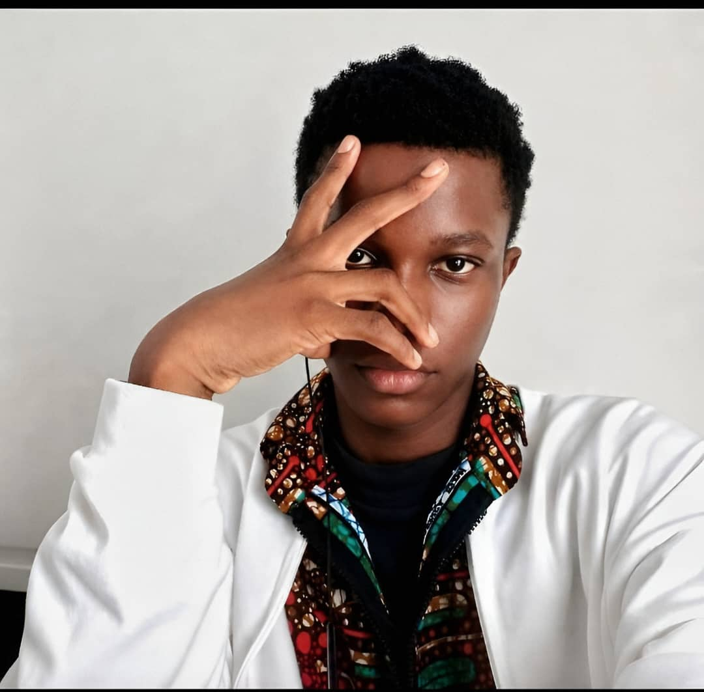

A Safer World
Create solutions that protect people, improve security, build trust, and make communities safer.
PROTECTINDEPENDENT FOUNDERNIGERIA
I'm an 18-year-old Nigerian founder driven by curiosity, real-world problems and the possibility of building technology that makes people's lives better.
The impact I want to create
I’m curious about the world and how things work, especially the meaningful problems people face in everyday life. I like exploring how systems fit together, where they create friction, and what could make them work better.
I’m open to opportunities across industries. I learn by researching, experimenting and building, because I believe meaningful innovation starts with understanding the problem before deciding what to make.
OPEN TO EVERY INDUSTRY
These are the human outcomes I hope my work can serve—not boundaries around the industries I can enter.
I want to find meaningful problems wherever they exist and use technology, innovation, creativity, and problem-solving to improve people's lives.
Create solutions that protect people, improve security, build trust, and make communities safer.
PROTECTExplore innovations that improve physical and mental wellbeing and people's quality of life.
THRIVECreate experiences, products, and innovations that bring joy, creativity, entertainment, and excitement into everyday life.
DELIGHTSolve everyday problems, remove unnecessary difficulties, and make essential services and activities more accessible.
SIMPLIFYI want to build technology that makes the world safer, healthier, fun and easier — while enjoying the journey of creating something meaningful.
OrchestFlow is building logistics operating infrastructure capable of addressing multiple challenges across freight transportation. We're starting with Nigerian freight logistics, solving recognised problems one by one, and building towards a more connected, transparent, efficient, accountable and reliable logistics ecosystem.
Begin with recognised needs in Nigerian freight.
Build the initial logistics operating platform.
Use operational learning to refine the infrastructure.
Address more challenges across the ecosystem.
We’re developing infrastructure to help transport companies, drivers, vehicles, relevant agencies and other logistics stakeholders coordinate with greater visibility across freight operations.
Freight operations can involve disconnected coordination, limited visibility into journeys and payments, unnecessary delays and other sources of friction. One initial problem we’re addressing is checkpoint extortion and unofficial payment demands affecting freight operators.
Sentinel is our initial logistics operating platform, currently under development to support coordination, journey visibility and accountability across freight operations.
Sentinel is our initial logistics platform, and platform development is underway. The capabilities listed below are exploratory; none is presented as implemented, tested or deployed.
These are feature areas being researched or considered; they are not all necessarily under active development.
Our ambition is to keep improving the infrastructure as we learn from real operations and identify new challenges across logistics. This includes developing a central vehicle registry that complements existing official government registries rather than replacing them. Our long-term direction goes beyond checkpoint security and truck tracking.
LEARNING THROUGH PEOPLE
I'm interested in The Bridge because I want to learn alongside people who are building ambitious companies. I want to understand how great founders identify problems, validate ideas, build products, make difficult decisions and turn early experiments into meaningful businesses.
I see this as an opportunity to challenge my thinking, gain practical experience, build relationships and become a better founder while developing OrchestFlow.
Start with a real problem.
Stay curious about the work.